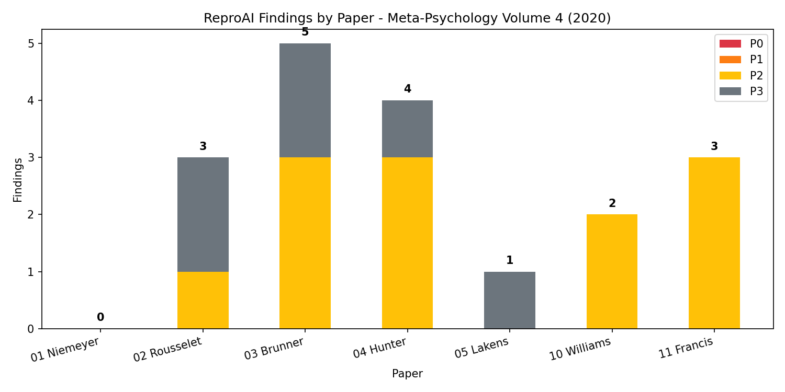

Meta-Psychology, Volume 4 — 2020
| # | First Author | DOI | Type | P0 | P1 | P2 | P3 | Total | Verdict |
|---|---|---|---|---|---|---|---|---|---|
| 01 | Niemeyer | MP.2018.874 | Method | 0 | 0 | 0 | 0 | 0 | Not audited |
| 02 | Rousselet | MP.2019.1630 | Sim | 0 | 0 | 1 | 2 | 3 | Near-exact |
| 03 | Brunner | MP.2018.874 | Sim | 0 | 0 | 3 | 2 | 5 | Substantial |
| 04 | Hunter | MP.2019.1992 | Sim | 0 | 0 | 3 | 1 | 4 | Not reproducible |
| 05 | Lakens | MP.2018.933 | Method | 0 | 0 | 0 | 1 | 1 | Full |
| 06 | Holtz | — | Non-emp | Not audited | |||||
| 07 | Olvera-Astivia | — | Non-emp | Not audited | |||||
| 08 | Hanel | — | Non-emp | Not audited | |||||
| 09 | Evans/Navarro | — | Non-emp | Not audited | |||||
| 10 | Williams | MP.2018.872 | Critique | 0 | 0 | 2 | 0 | 2 | Partial |
| 11 | Francis | MP.2019.2266 | Critique | 0 | 0 | 3 | 0 | 3 | Substantial |
| TOTAL | 0 | 0 | 12 | 6 | 18 | ||||
P0: 0 P1: 0 P2: 12 P3: 6 Total: 18 findings
Key pattern: No P0 or P1 findings in this volume. All 18 findings are P2 (code/data availability) or P3 (minor). The dominant issue across the volume is OSF code availability: in 5 of 7 audited papers, the OSF project either contains no code, has broken file placeholders, or refers to a secondary project.

3 findings (0/0/1/2). Reproduced all 120 Miller (1988) bias values using the authors' R code. OSF has only a cover letter PDF. Near-exact reproduction.
5 findings (0/0/3/2). Z-curve and p-curve reproduce within MC error. Primary code URL is dead (only Wayback). OSF has manuscript only. Figure 1 has a minor inconsistency (0.635 vs computed 0.668).
4 findings (0/0/3/1). R script on OSF is a broken placeholder (404). The 540,000-sim study cannot be verified or replicated. Theoretical argument is sound. Not reproducible.
1 finding (0/0/0/1). All Figure 1 values independently reimplemented in R and match exactly. Shiny app is live. Fully reproducible.
2 findings (0/0/2/0). Main OSF project (J2QGS) is empty. Analysis is on a secondary project (kd3en). Coding error claims are specific and internally consistent.
3 findings (0/0/3/0). Product of powers (0.01356 ≈ 0.014) independently verified. Code files on OSF show size=0 (potential sync issue). Main OSF project has only a cover letter.
| Issue | Papers Affected | Severity |
|---|---|---|
| OSF project empty or has broken code | 02, 03, 04, 10, 11 (5 of 7) | P2 |
| "Open and reproducible analysis" badge not substantiated | 03, 04, 10 (3 of 7) | P2 |
| Reproduction record not archived | 04, 11 (2 of 7) | P2 |
| Random seed not reported | 03, 04 (2 of 7) | P3 |
| Minor numerical inconsistency | 03 (Figure 1: 0.635 vs 0.668) | P3 |
VOLUME4_REPROAI_SUMMARY.csv — summary tableVOLUME4_REPROAI_SUMMARY.xlsx — summary table (Excel)VOLUME4_FINDINGS_PLOT.png — findings distribution plotVOLUME4_REPROAI_META_REPORT.html — this report0X_*\/ReproAI\/*_REPROAI_REPORT.html0X_*\/ReproAI\/*\/reproai_reports\/{architecture_report,risk_register,advisory_plan}.json0X_*\/ReproAI\/*\/extracted\/manuscript_claims.md